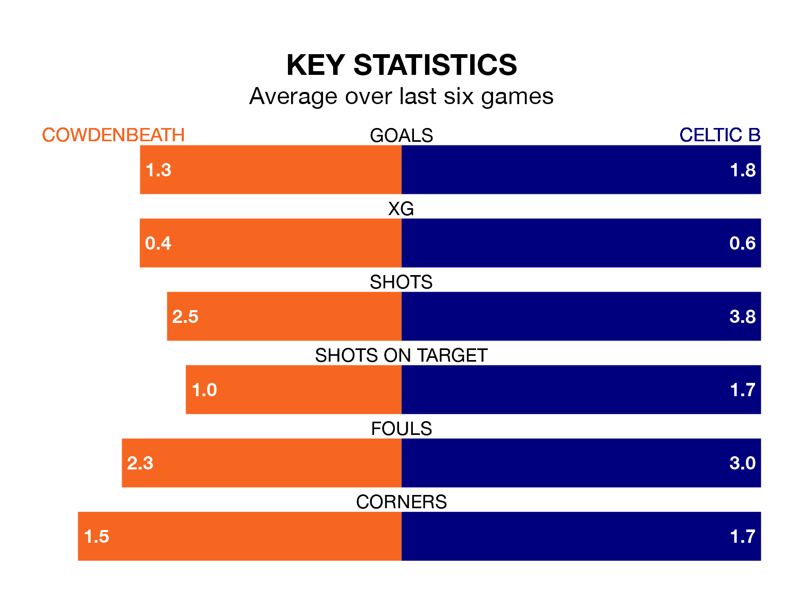

Cowdenbeath host Celtic B in Saturday's match at Central Park looking to bounce back from defeat last time out in Highland and Lowland Football Leagues.
Cowdenbeath, who sit zero in the league after 16 games, fell to a 4-2 away defeat to Bo'ness United on November 11.
They face a Celtic B side who picked up a win in their last match, a 2-1 victory against BSC Glasgow, and who sit zero in the table.
Cowdenbeath are in disappointing form in Highland and Lowland Football Leagues, with one win and three draws from their last six games.
With three wins and three losses over that period, Celtic B's form is better – they have taken nine points from 18, compared to the hosts' six.
With 29 goals in 15 games so far this season, the away side are scoring more than average in the league with 1.9 goals per game. And they are conceding fewer than average, letting in 18 goals at a rate of 1.2 per game.
Cowdenbeath, meanwhile, are average scorers, with 1.7 goals per game. They have conceded 1.6 goals per game.
